|
4-2-3-1
|
Türkiye | 0 | - | 1 | Paraguay |
4-4-2
|
| HT 0-1 | ||||||
|
FIFA World CupSaturday 20 June 2026
|
||||||
- Venue
- San Francisco Bay Area Stadium
- Attendance
- 68,827
- Referee
- Iván Arcides Barton Cisneros
Substitution46'
K. Aktürkoğlu
B. Yılmaz
- 2
Substitution60'
İ. Yüksek
C. Uzun
Y. Akgün
D. Gül
Yellow card63'
Vincenzo Montella
Substitution70'
F. Kadıoğlu
E. Elmalı
Yellow card71'
E. Elmalı
Substitution86'
A. Bardakcı
O. Kökçü
Whistle45+11'
45+11'
Goal2'
M. Galarza
Assist: J. Enciso
Yellow card4'
M. Galarza
Red card45+3'
M. Almirón
Substitution46'
I. Pitta
D. Bobadilla
Substitution67'
D. Gómez
G. Velázquez
Substitution81'
J. Cáceres
A. Maidana
- 2
Substitution90+2'
J. Enciso
G. Ávalos
M. Galarza
J. Canale
Türkiye | |
|---|---|
Goalkeeper | |
| 23 | U. Çakır |
Defender | |
| 3 | M. Demiral |
| 14 | A. Bardakcı 86' |
| 18 | M. Müldür |
| 20 | F. Kadıoğlu 70' |
Midfielder | |
| 8 | A. Güler |
| 10 | H. Çalhanoğlu |
| 11 | K. Yıldız |
| 16 | İ. Yüksek 60' |
| 19 | Y. Akgün 60' |
Forward | |
| 7 | K. Aktürkoğlu 46' |
Substitutes | |
| 6 | O. Kökçü 86' |
| 9 | D. Gül 60' |
| 13 | E. Elmalı 70'71' |
| 21 | B. Yılmaz 46' |
| 26 | C. Uzun 60' |
Paraguay | |
Goalkeeper | |
| 12 | O. Gill |
Defender | |
| 3 | O. Alderete |
| 4 | J. Cáceres 81' |
| 6 | J. Alonso |
| 15 | G. Gómez |
Midfielder | |
| 8 | D. Gómez 67' |
| 10 | M. Almirón 45+3' |
| 14 | A. Cubas |
| 23 | M. Galarza 2'4'90+2' |
Forward | |
| 19 | J. Enciso 90+2' |
| 25 | I. Pitta 46' |
Substitutes | |
| 2 | G. Velázquez 67' |
| 13 | J. Canale 90+2' |
| 16 | D. Bobadilla 46' |
| 21 | G. Ávalos 90+2' |
| 26 | A. Maidana 81' |


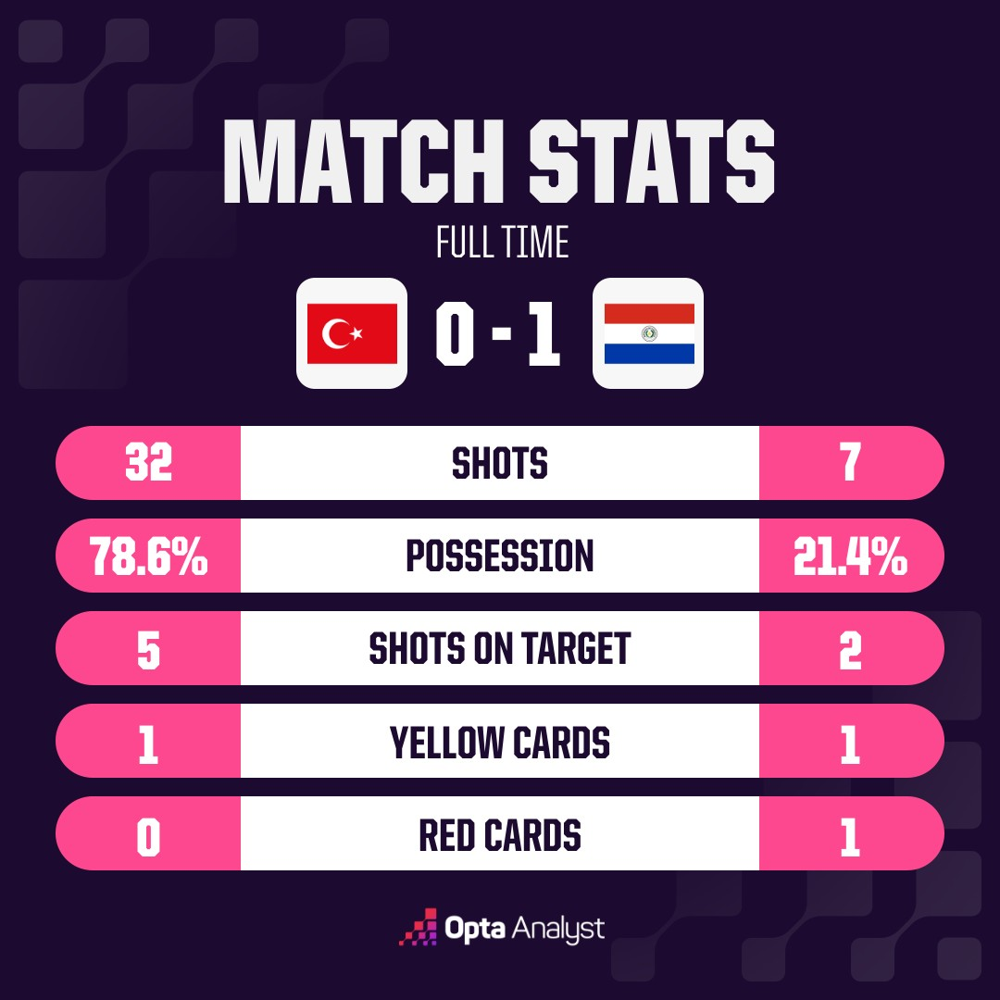
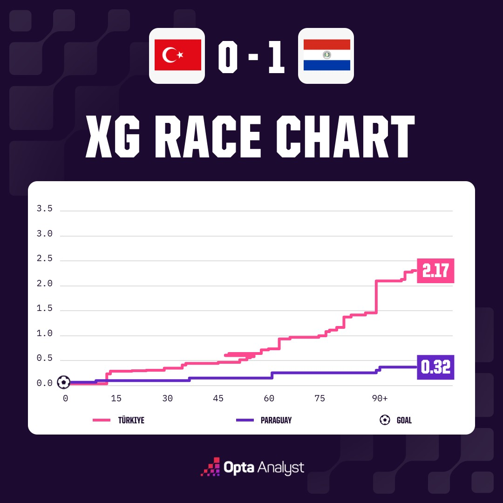
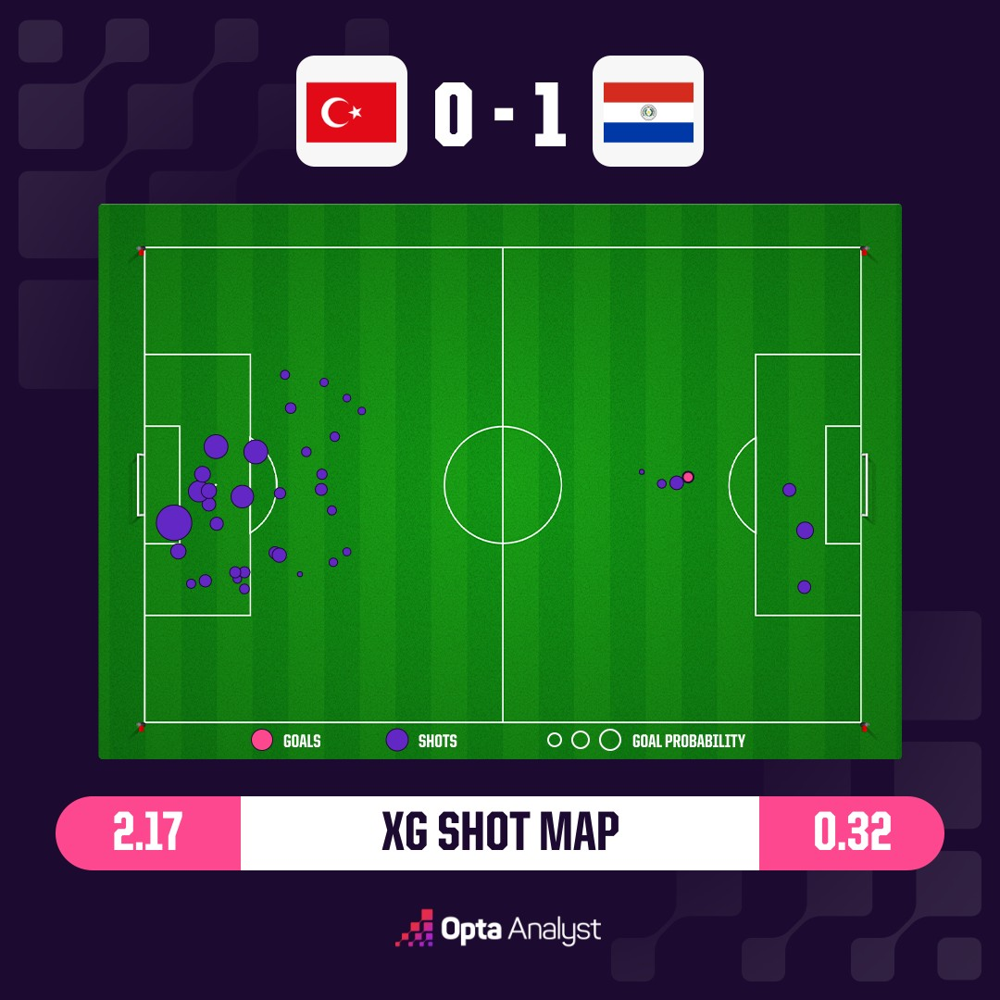
90+9'
Paraguay WIN! It’s all over at San Francisco Bay Area Stadium, with Paraguay coming out on top 0-1 over Türkiye, thanks to goal from Matías Galarza.
90+9'
MISS! A shot from Hakan Çalhanoğlu ends up being off target. They might have done a bit better with that one, but it remains Türkiye 0-1 Paraguay.
90+9'
Good play from Can Uzun, who draws a foul from Andrés Cubas to hand Türkiye a free-kick in a dangerous position. Will they create something from this set-piece?
90+8'
It's all hands on deck for Paraguay as they defend their lead, making a wave of critical blocks and clearances
90+7'
HUGE CHANCE GOES BEGGING! What a miss that is from Merih Demiral, who looked all set to score a goal that their team need, but instead fails to direct their attempt into the back of the net. That was a big, big opportunity for Türkiye.
90+7'
That might have been going in! A fantastic block from Gustavo Velázquez, who gets in the way of a goal-bound effort from Can Uzun. Would the goalkeeper have been beaten? We will never know.
90+6'
Shot blocked! Kenan Yıldız unleashes an attempt at goal, but the ball does not reach its target thanks to Alexandro Maidana, who makes a solid block to stem the danger – for now.
90+6'
A foul from José Canale on Arda Güler sees Türkiye win a free-kick, but it is not in a dangerous position, so Paraguay should be confident they can defend it easily enough.
90+4'
Free-kick! A foul from Kenan Yıldız on Damián Bobadilla. It is well away from Türkiye’s goal, so it is unlikely to result in a chance for Paraguay.
90+4'
In the last 15 minutes, it is Türkiye who have dominated the ball, having seen 77.32% of the possession, yet they have not been able to go and turn that into a goal just yet, with their opponents standing firm.
90+3'
Free-kick! A foul from Deniz Gül on Gustavo Gómez. It is well away from Türkiye’s goal, so it is unlikely to result in a chance for Paraguay.
90+2'
Substitution. Matías Galarza has to make way, with José Canale coming on in their place following an injury. That is going to come as a blow for Paraguay. Can they overcome it?
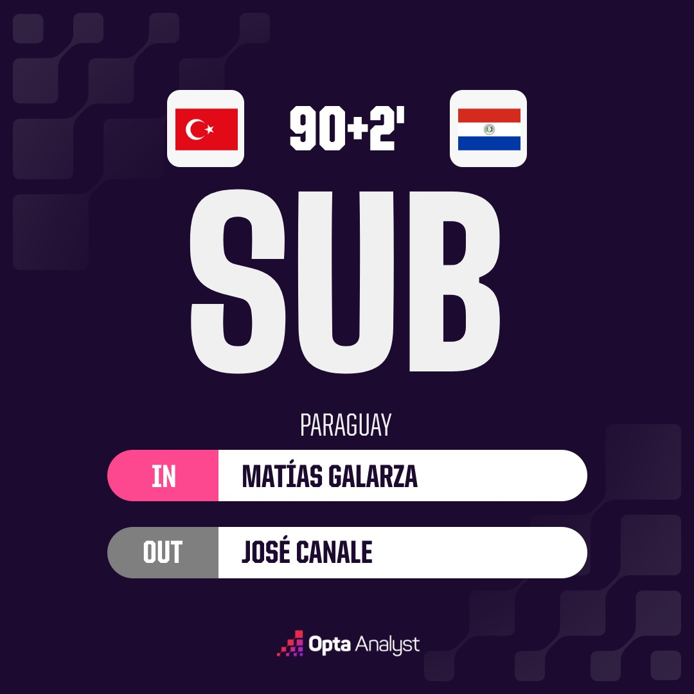
90+2'
That is bad news for Paraguay, as they suffer an injury blow, with Julio Enciso having had to receive treatment before then making their way off the pitch. Gabriel Ávalos is coming on.
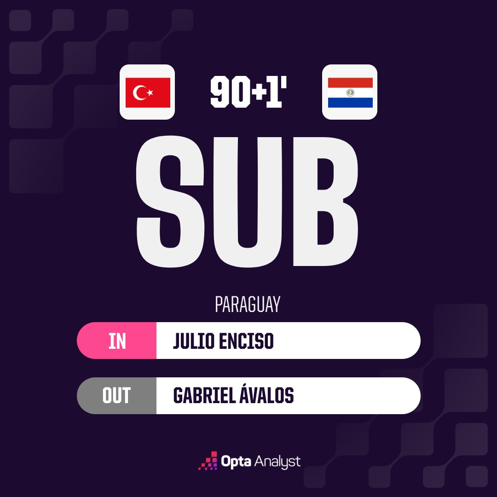
90+1'
A foul from Andrés Cubas on Arda Güler sees Türkiye win a free-kick, but it is not in a dangerous position, so Paraguay should be confident they can defend it easily enough.
90+1'
BLOCKED! That was close. Matías Galarza got off a shot, which was heading in, but Eren Elmalı was on hand to make a vital intervention. Great block!
89'
MISSED! That is really poor from Deniz Gül, who fails to convert from a golden opportunity, with the goal gaping. Will Türkiye pay for their profligacy, or can they put that miss behind them?
89'
WHAT A MISS! Oh dear, oh dear, that is an awful attempt from Can Uzun, as a huge chance for Türkiye to score the goal they need goes begging. What a let off for Paraguay, though. They will have to defend better than that from here on out!
89'
BLOCK! An intervention from Deniz Gül might have just prevented a goal, with the defending player getting in the way of an attempt from Gustavo Gómez. Solid defending there!
88'
Good play from Matías Galarza, who draws a foul from Eren Elmalı to hand Paraguay a free-kick in a dangerous position. Will they create something from this set-piece?
86'
Merih Demiral goes in on Júnior Alonso and concedes a foul. The free-kick is not in a particularly dangerous area from Türkiye’s viewpoint, though.
86'
Corner now for Türkiye, as they see a shot from Arda Güler deflected out of play for a set-piece. Paraguay have some defending to do, here. Could this result in a big opportunity?
86'
Substitution! Orkun Kökçü replaces Abdülkerim Bardakcı for Türkiye as the manager shuffles the pack. Can Orkun Kökçü make an impression as this match continues?
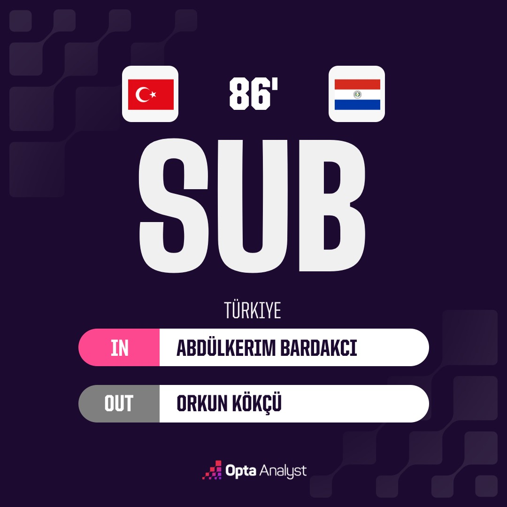
84'
The Türkiye defence steps up in time and there is a frustration for Júnior Alonso, who thought they were through until the flag goes up to signal offside.
84'
Foul! A free-kick now in a dangerous area for Paraguay, after Julio Enciso is fouled by Abdülkerim Bardakcı. Can Paraguay make the most of this opportunity?
82'
A chance goes begging as Can Uzun gets off a shot that does not hit the target. They might have done better with that one, but instead it is a goal-kick to Paraguay.
81'
A substitution for Paraguay sees Juan José Cáceres replaced by Alexandro Maidana. There does not appear to be any obvious sign of an injury, so that is a tactical switch.
80'
MISS! A shot from Merih Demiral ends up being off target. They might have done a bit better with that one, but it remains Türkiye 0-1 Paraguay.
78'
Türkiye are having plenty of the ball, with 81.43% possession in the last 15 minutes. However, they have been unable to transfer that possessional dominance into a goal during that period.
78'
A chance goes begging as Mert Müldür gets off a shot that does not hit the target. They might have done better with that one, but instead it is a goal-kick to Paraguay.
76'
Can Paraguay survive here? They will have some defending to do after the ball is turned behind for a corner kick. Will Türkiye take this opportunity and grab the goal they have been pushing for?
76'
A barrage of deliveries from Türkiye, who are pushing hard to force the equaliser.
76'
Shot blocked! Hakan Çalhanoğlu unleashes an attempt at goal, but the ball does not reach its target thanks to Gustavo Velázquez, who makes a solid block to stem the danger – for now.
76'
With 15 minutes of normal time remaining, it is Türkiye who have had more of the ball, with 79.60% compared to Paraguay’s 20.40%.
75'
Mert Müldür's effort is deflected out for a corner. Can Türkiye make anything of this set-piece?
75'
It is a corner now to Türkiye, with Paraguay somewhat hanging on here as they look to hold out for a positive result. Can Türkiye make something of this set-piece opportunity?
74'
It’s backs to the wall now — Paraguay throwing everything into defending their advantage, with a flurry of crucial interventions.
72'
No luck! Baris Yılmaz takes on a shot that, had they got it right, might have been set to test the goalkeeper, but instead it is sent off target and Paraguay come away unscathed.
71'
A yellow card for Türkiye's Eren Elmalı. They will have to walk a tightrope for the rest of this match, and Paraguay will likely look to target them and draw a second bookable offence.
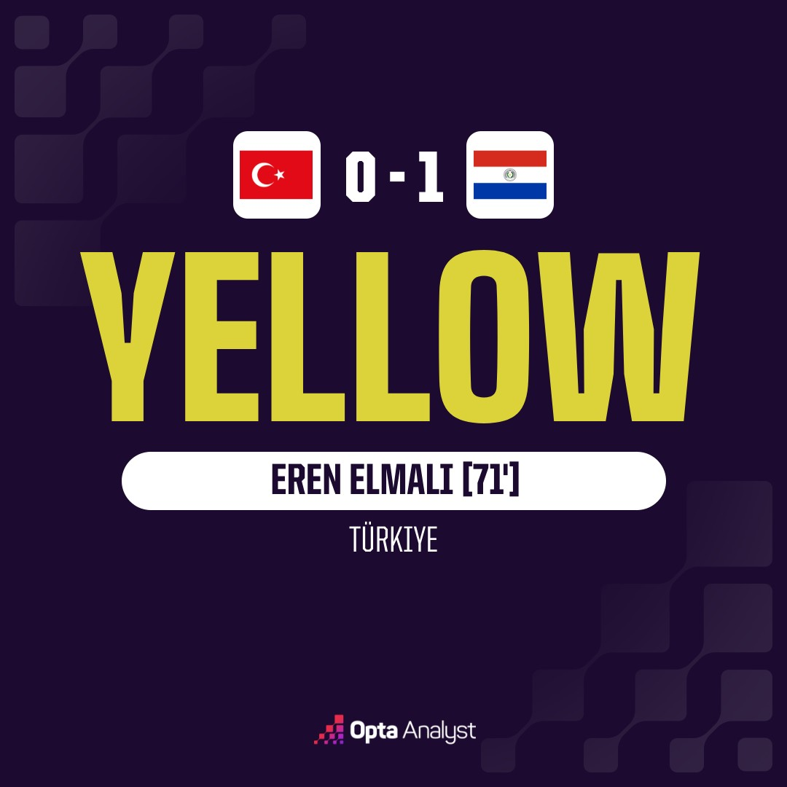
71'
Foul! A free-kick now in a dangerous area for Paraguay, after Juan José Cáceres is fouled by Eren Elmalı. Can Paraguay make the most of this opportunity?
70'
Ferdi Kadıoğlu’s match is over as Türkiye decide to make a substitution. Eren Elmalı enters the field in what looks like a tactical change.
68'
Free-kick! A foul from Baris Yılmaz on Júnior Alonso. It is well away from Türkiye’s goal, so it is unlikely to result in a chance for Paraguay.
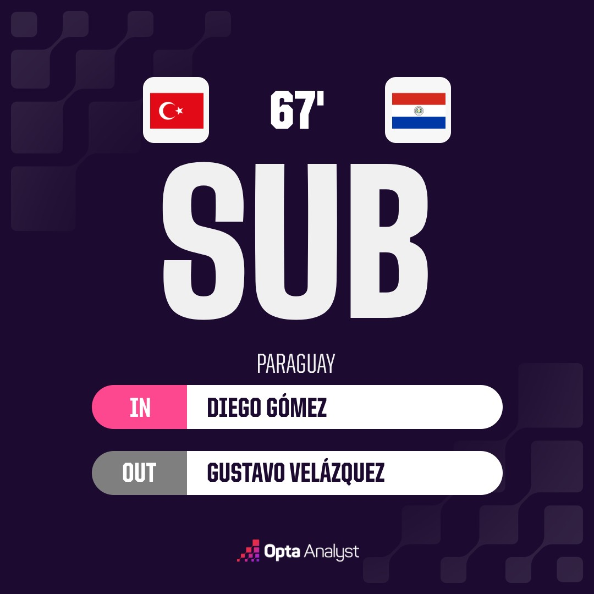
67'
Diego Gómez appears to have sustained an injury, and is unable to carry on. They make way for Gustavo Velázquez.
66'
With 25 minutes left to play, this game is about to go into its final quarter. So, that seems a good chance to check on the shot count. Paraguay have had 5 efforts, with 2 of those hitting the target. Türkiye, on the other hand, have had 19 shots, getting 4 of those attempts on target.
65'
MISS! The score remains 0-1, with Paraguay relieved after Türkiye’s Merih Demiral goes for goal but sends their attempt off target. Not one to write home about, that one.
64'
No luck – it’s offside! Arda Güler looked to dart in behind and get on the end of a pass, yet they just went too early, and the flag is up to signal offside.
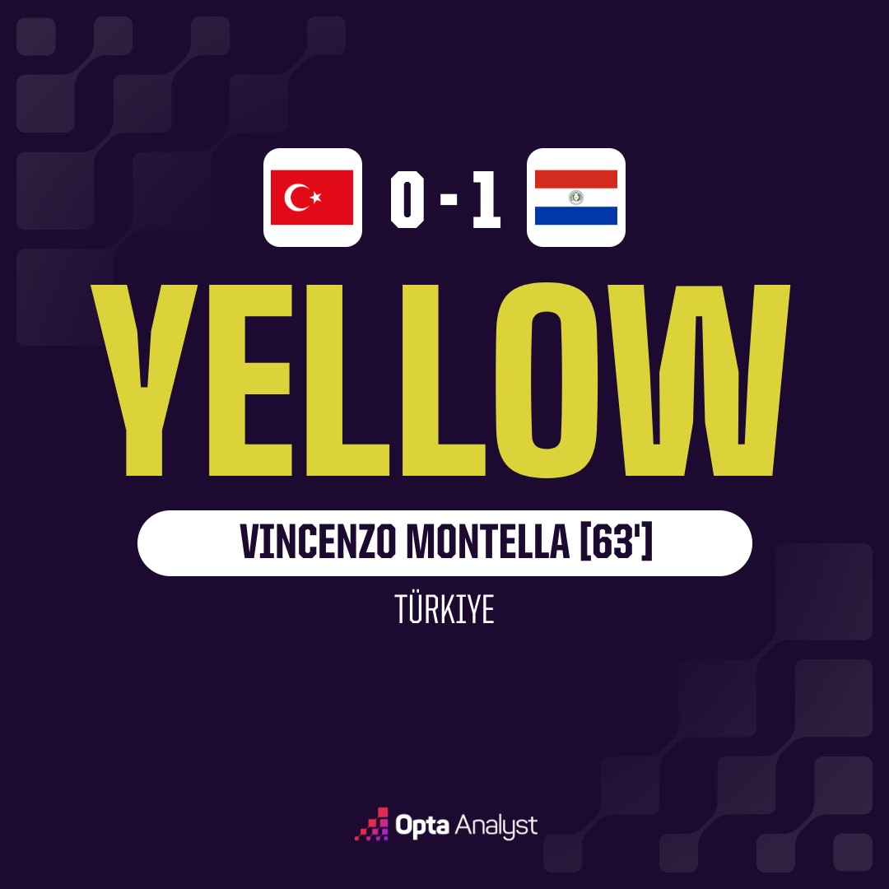
63'
There is plenty of possession for Türkiye, with 84.31% compared to Paraguay 15.69% in the last 15 minutes. However, Türkiye have not been able to turn that dominance of the ball into a goal.
62'
A chance goes begging as Kenan Yıldız gets off a shot that does not hit the target. They might have done better with that one, but instead it is a goal-kick to Paraguay.
62'
MISSED! That is really poor from Deniz Gül, who fails to convert from a golden opportunity, with the goal gaping. Will Türkiye pay for their profligacy, or can they put that miss behind them?
62'
It's all hands on deck for Paraguay as they defend their lead, making a wave of critical blocks and clearances
60'
No luck! Julio Enciso takes on a shot that, had they got it right, might have been set to test the goalkeeper, but instead it is sent off target and Türkiye come away unscathed.
60'
Yunus Akgün’s match is over as Türkiye decide to make a substitution. Deniz Gül enters the field in what looks like a tactical change.
60'
Ismail Yüksek’s match is over as Türkiye decide to make a substitution. Can Uzun enters the field in what looks like a tactical change.
59'
Merih Demiral goes for goal with a strike from distance, but Orlando Gill is able to watch it all the way and make the save. A bit of a tester, there.
57'
MISSED! That is really poor from Hakan Çalhanoğlu, who fails to convert from a golden opportunity, with the goal gaping. Will Türkiye pay for their profligacy, or can they put that miss behind them?
54'
A rash challenge from Baris Yılmaz, who sends Omar Alderete tumbling, giving Paraguay a free-kick. It is not in a threatening position, but it gives them a chance to get back on the ball.
52'
A foul from Omar Alderete on Ferdi Kadıoğlu sees Türkiye win a free-kick, but it is not in a dangerous position, so Paraguay should be confident they can defend it easily enough.
52'
This could be a chance for Paraguay, after Merih Demiral fouls Julio Enciso, handing them a free-kick in a threatening area. A good set-piece from here could really test the Türkiye defense!
49'
Despite trailing, Türkiye are showing real defensive grit, digging in and stopping further damage as they try to build a platform.
48'
No luck! Kenan Yıldız takes on a shot that, had they got it right, might have been set to test the goalkeeper, but instead it is sent off target and Paraguay come away unscathed.
48'
Can Paraguay survive here? They will have some defending to do after the ball is turned behind for a corner kick. Will Türkiye take this opportunity and grab the goal they have been pushing for?
47'
Orlando Gill is called into action to keep out a shot from outside the box by Merih Demiral. The effort from the Türkiye player was on target, but Paraguay shot-stopper got to it.
46'
Substitution! Baris Yılmaz replaces Kerem Aktürkoğlu for Türkiye as the manager shuffles the pack. Can Baris Yılmaz make an impression as this match continues?
46'
A substitution for Paraguay sees Isidro Pitta replaced by Damián Bobadilla. There does not appear to be any obvious sign of an injury, so that is a tactical switch.
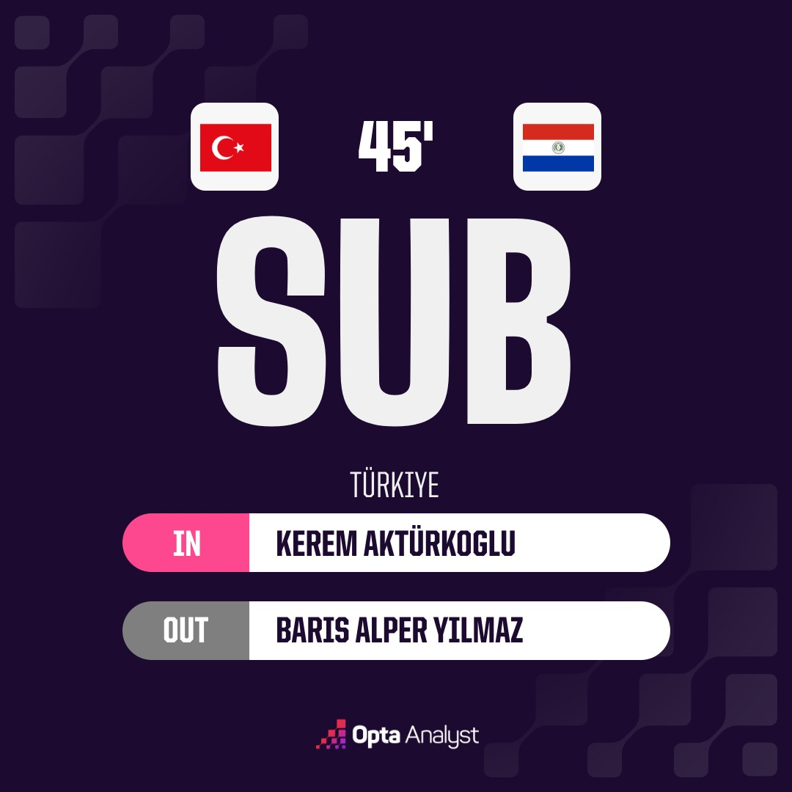
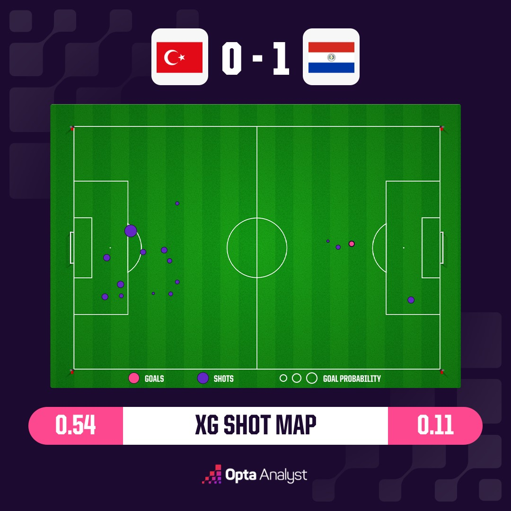
45+11'
The first half comes to a close and it’s Paraguay who have the lead over Türkiye at San Francisco Bay Area Stadium, with the scoreline 0-1 at the interval. Will Türkiye turn this around after the break?
45+10'
Great block from Gustavo Gómez, as they get in the way of an attempt from Hakan Çalhanoğlu that might have been set to cause the goalkeeper some problems. Solid defending from the Paraguay player.
45+9'
BLOCKED! That was close. Abdülkerim Bardakcı got off a shot, which was heading in, but Andrés Cubas was on hand to make a vital intervention. Great block!
45+8'
MISS! The score remains 0-1, with Paraguay relieved after Türkiye’s Ismail Yüksek goes for goal but sends their attempt off target. Not one to write home about, that one.
45+6'
A rash challenge from Yunus Akgün, who sends Matías Galarza tumbling, giving Paraguay a free-kick. It is not in a threatening position, but it gives them a chance to get back on the ball.
45+6'
That is a disappointing effort from Ismail Yüksek, who went for glory but got their attempt wrong, and the shot sailed off target. A frustrating moment for Türkiye.
45+6'
Excellent defensive work from Paraguay; their organization and success in key duels are effectively safeguarding their lead.
45+3'
Miguel Almirón is sent off! The referee brandishes a red card and, all of a sudden, the lead being enjoyed by Paraguay looks much more vulnerable.
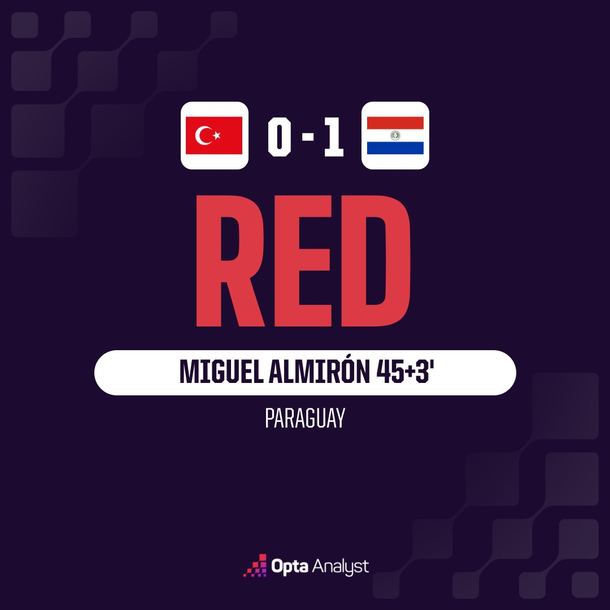
45+2'
VAR… the decision stands! No change to the referee’s original call, as VAR deems the official to have got it spot on. There is no alteration to the decision.
45+2'
Plenty of the ball in the last quarter-of-an-hour of this match for Türkiye, but still Paraguay stand firm, despite having had only 32.81% of the ball in that period. Can Türkiye make their possessional dominance count?
45+2'
This decision may not stand, as it is going to VAR. The referee has stopped the play while his video assistant reviews the incident.
45+1'
Shot blocked! Hakan Çalhanoğlu unleashes an attempt at goal, but the ball does not reach its target thanks to Diego Gómez, who makes a solid block to stem the danger – for now.
45+1'
A rash challenge from Andrés Cubas, who sends Arda Güler tumbling, giving Türkiye a free-kick. It is not in a threatening position, but it gives them a chance to get back on the ball.
44'
Hakan Çalhanoğlu goes in on Andrés Cubas and concedes a foul. The free-kick is not in a particularly dangerous area from Türkiye’s viewpoint, though.
43'
Despite trailing, Türkiye are showing real defensive grit, digging in and stopping further damage as they try to build a platform.
42'
A foul from Isidro Pitta on Mert Müldür sees Türkiye win a free-kick, but it is not in a dangerous position, so Paraguay should be confident they can defend it easily enough.
41'
That’s offside! A switched-on defensive line from Türkiye, as they step up at the right time to catch Isidro Pitta offside, and the assistant referee’s flag is up.
38'
Great defending from Paraguay, who are staying organised and winning key battles to preserve their lead.
37'
A rash challenge from Andrés Cubas, who sends Kenan Yıldız tumbling, giving Türkiye a free-kick. It is not in a threatening position, but it gives them a chance to get back on the ball.
37'
Despite trailing, Türkiye are showing real defensive grit, digging in and stopping further damage as they try to build a platform.
37'
SHOT! Juan José Cáceres manages to get a shot off from inside the area, but although it was heading in, they cannot get enough on it to beat Ugurcan Çakır, who makes the save.
36'
That is a disappointing effort from Kenan Yıldız, who went for glory but got their attempt wrong, and the shot sailed off target. A frustrating moment for Türkiye.
35'
Against the post! The woodwork comes to Paraguay salvation as Mert Müldür sees an effort clatter the upright. Will Paraguay make that good fortune count, or can Türkiye put that bad luck behind them and grab a goal?
34'
Foul! A free-kick now in a dangerous area for Türkiye, after Arda Güler is fouled by Diego Gómez. Can Türkiye make the most of this opportunity?
33'
A free-kick to Paraguay, as Mert Müldür goes in and fouls Matías Galarza. However, Türkiye will not mind giving one away in this area too much, with plenty of distance to their goal.
32'
A foul from Isidro Pitta on Ferdi Kadıoğlu sees Türkiye win a free-kick, but it is not in a dangerous position, so Paraguay should be confident they can defend it easily enough.
32'
Great defending from Paraguay, who are staying organised and winning key battles to preserve their lead.
32'
In the last 15 minutes, it is Türkiye who have dominated the ball, having seen 86.90% of the possession, yet they have not been able to go and turn that into a goal just yet, with their opponents standing firm.
31'
That’s offside! A switched-on defensive line from Paraguay, as they step up at the right time to catch Merih Demiral offside, and the assistant referee’s flag is up.
30'
Foul! A free-kick now in a dangerous area for Türkiye, after Mert Müldür is fouled by Matías Galarza. Can Türkiye make the most of this opportunity?
30'
Orlando Gill is called into action to keep out a shot from outside the box by Kenan Yıldız. The effort from the Türkiye player was on target, but Paraguay shot-stopper got to it.
26'
Paraguay's defense is looking formidable early on, calmly and authoritatively dismantling opposition attacks.
25'
BLOCKED! That was close. Arda Güler got off a shot, which was heading in, but Omar Alderete was on hand to make a vital intervention. Great block!
23'
Corner! The ball goes behind and now Türkiye will aim to deliver a good ball into the penalty area and test that Paraguay defence, which has been frustrating them in recent minutes.
22'
Türkiye are racking up corners and free-kicks - they’re starting to dominate in dangerous areas.
22'
Good play from Kenan Yıldız, who draws a foul from Juan José Cáceres to hand Türkiye a free-kick in a dangerous position. Will they create something from this set-piece?
22'
Andrés Cubas goes in on Arda Güler and concedes a foul. The free-kick is not in a particularly dangerous area from Paraguay’s viewpoint, though.
22'
Paraguay have settled into their early advantage nicely. Five minutes of controlled possession, keeping Türkiye well away from goal and showing no signs of panic. Textbook start when you're ahead.
21'
Great block from Júnior Alonso, as they get in the way of an attempt from Hakan Çalhanoğlu that might have been set to cause the goalkeeper some problems. Solid defending from the Paraguay player.
21'
Can Paraguay survive here? They will have some defending to do after the ball is turned behind for a corner kick. Will Türkiye take this opportunity and grab the goal they have been pushing for?
20'
Strong early signals from Paraguay at the back — calm and commanding as they break up attacks with ease.
19'
A foul from Miguel Almirón on Arda Güler sees Türkiye win a free-kick, but it is not in a dangerous position, so Paraguay should be confident they can defend it easily enough.
19'
Can Paraguay survive here? They will have some defending to do after the ball is turned behind for a corner kick. Will Türkiye take this opportunity and grab the goal they have been pushing for?
17'
There is plenty of possession for Türkiye, with 76.47% compared to Paraguay 23.53% in the last 15 minutes. However, Türkiye have not been able to turn that dominance of the ball into a goal.
15'
Offside! Isidro Pitta thought they were through on goal, but the Türkiye defence stepped up in time to catch them offside, and the assistant referee puts their flag up.
15'
Paraguay's defense is looking formidable early on, calmly and authoritatively dismantling opposition attacks.
15'
That might have been going in! A fantastic block from Gustavo Gómez, who gets in the way of a goal-bound effort from Kenan Yıldız. Would the goalkeeper have been beaten? We will never know.
14'
A chance goes begging as Arda Güler gets off a shot that does not hit the target. They might have done better with that one, but instead it is a goal-kick to Paraguay.
11'
That is a disappointing effort from Diego Gómez, who went for glory but got their attempt wrong, and the shot sailed off target. A frustrating moment for Paraguay.
11'
MISS! A shot from Omar Alderete ends up being off target. They might have done a bit better with that one, but it remains Paraguay 1-0 Türkiye.
11'
Türkiye may be behind, but they’re battling hard defensively to stop the gap from widening. A gritty response at the back.
8'
Juan José Cáceres goes in on Ferdi Kadıoğlu and concedes a foul. The free-kick is not in a particularly dangerous area from Paraguay’s viewpoint, though.
7'
Strong early signals from Paraguay at the back — calm and commanding as they break up attacks with ease.
6'
Ismail Yüksek goes in on Miguel Almirón and concedes a foul. The free-kick is not in a particularly dangerous area from Türkiye’s viewpoint, though.
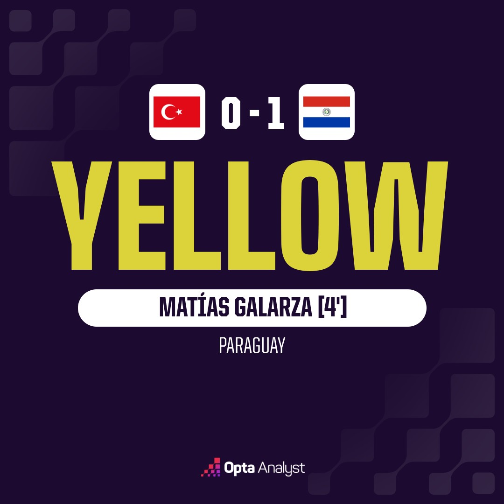
4'
That is a booking for Matías Galarza, who has received their first yellow card. They are not happy with the decision, but it is done now, and they will have to be careful for the rest of this game.
4'
A rash challenge from Matías Galarza, who sends Yunus Akgün tumbling, giving Türkiye a free-kick. It is not in a threatening position, but it gives them a chance to get back on the ball.
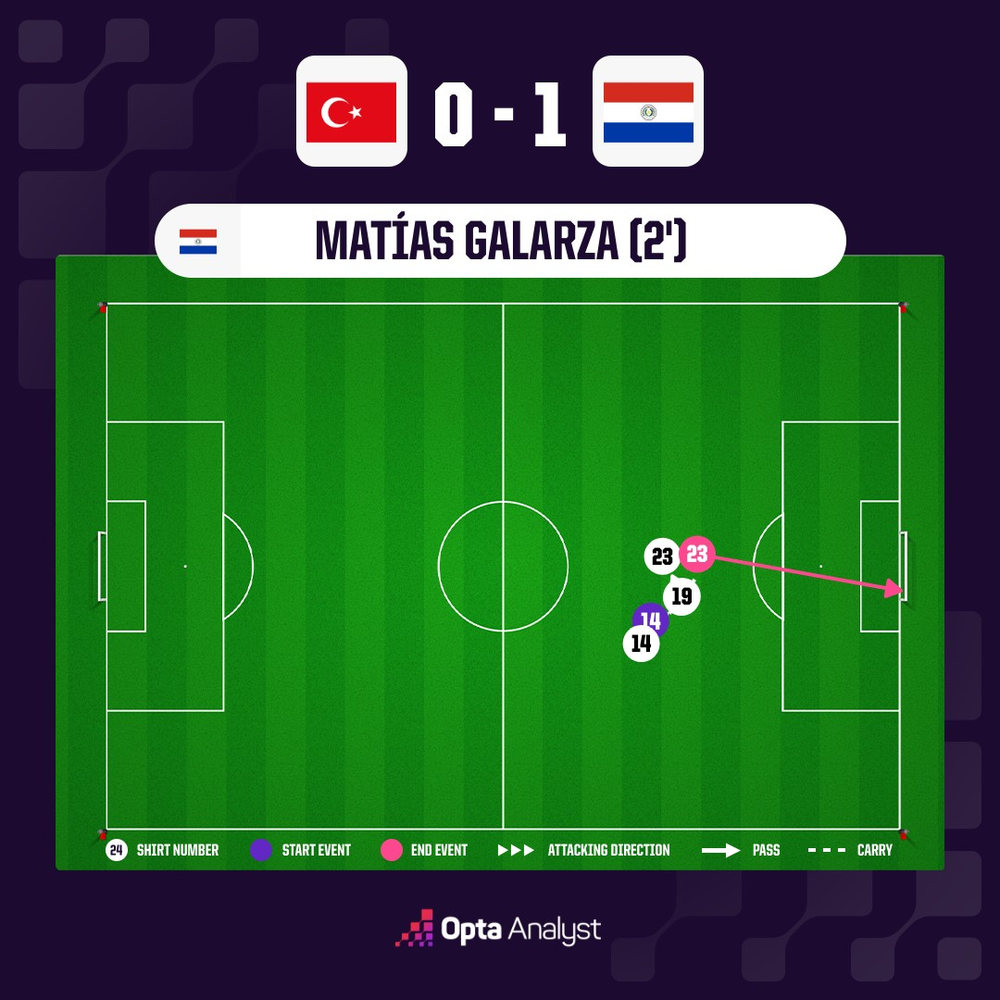
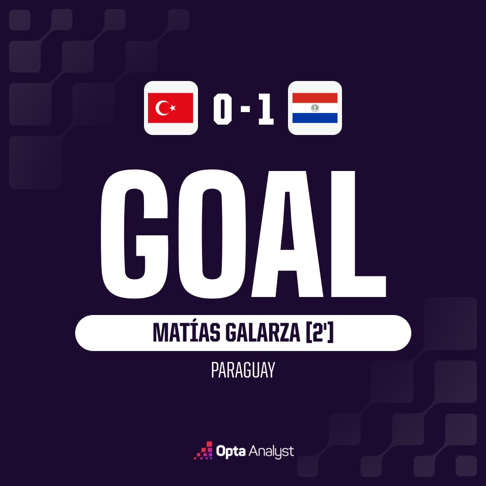
2'
GOAL! Paraguay take an early lead! It's a brilliant strike from Matías Galarza, who has found the back of the net from outside the box. What a start for Paraguay, who are ahead 1-0.
1'
And we are off! Strap in, folks, for this mouthwatering encounter between Türkiye and Paraguay at San Francisco Bay Area Stadium.
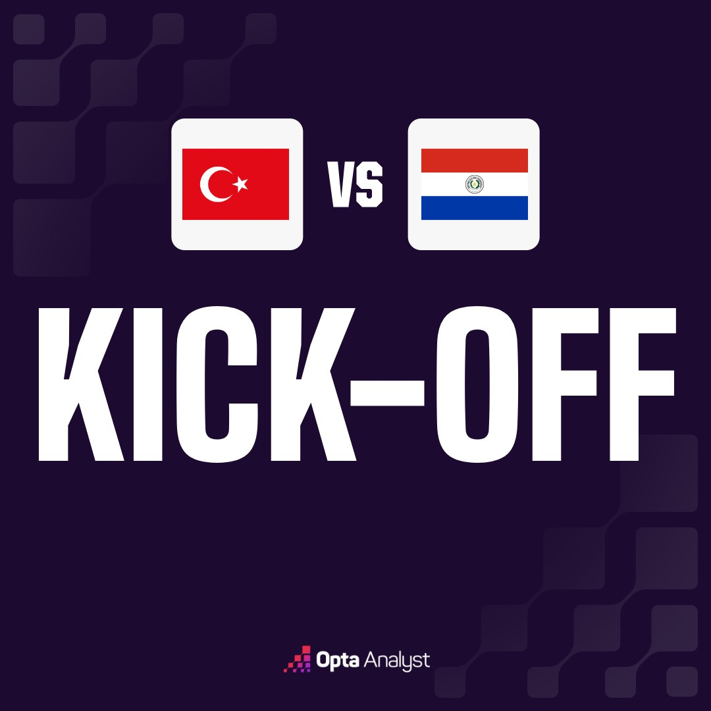
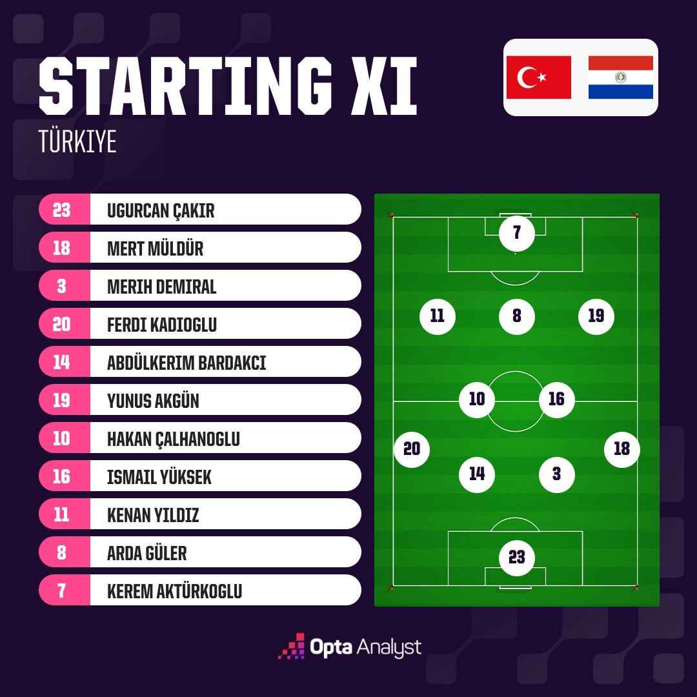
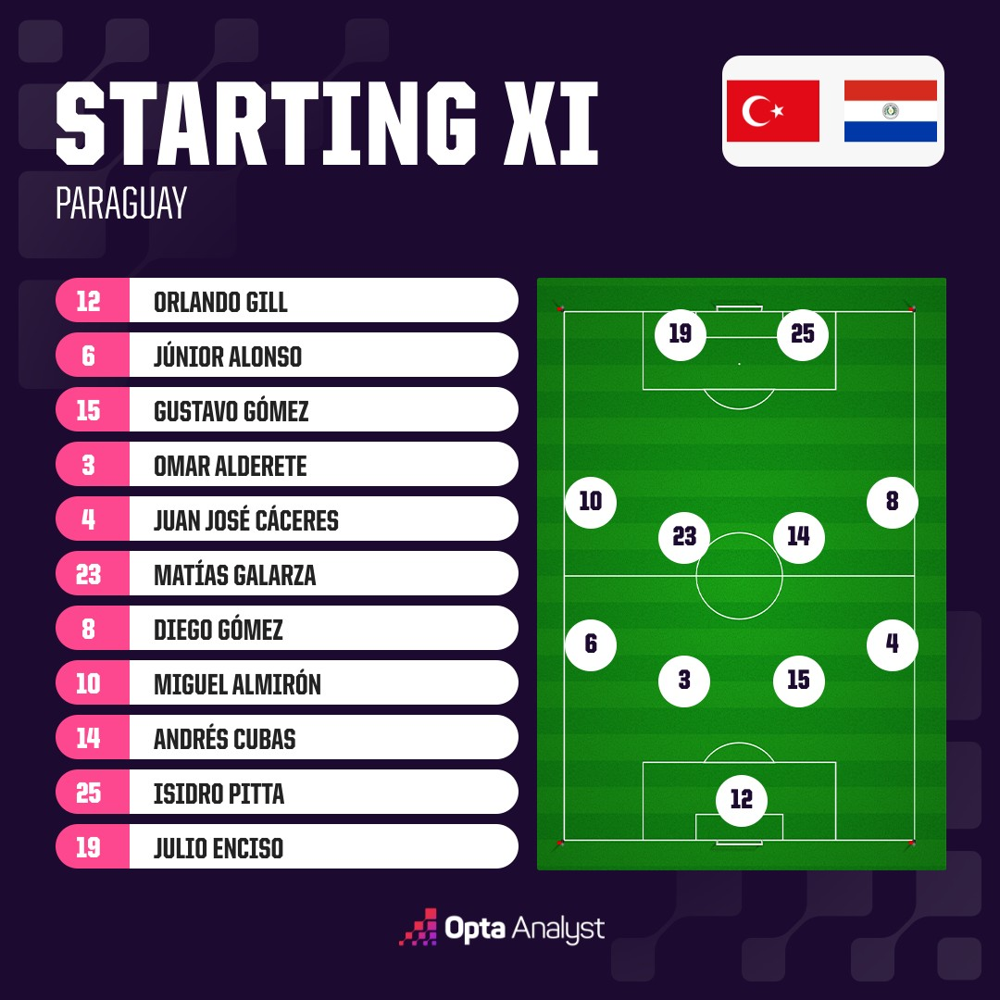
Türkiye play Paraguay on Friday at San Francisco Bay Area Stadium in a clash of teams who are looking for their first win of the FIFA World Cup group stage.
Türkiye slumped 2-0 against Australia in their opening World Cup group stage match on June 13. In five games this year, they have four wins and one loss.
Paraguay were defeated in their opening World Cup group stage game, falling 4-1 against the United States at Los Angeles Stadium on June 12. Mauricio was the sole player on the scoresheet in the loss. In 2026, they have won two and lost two.
Türkiye and Paraguay are third and fourth in the group, respectively, level on zero points. The United States are leading the group on three points. Australia are second, also on three points.
The clubs played out a 0-0 draw in their previous encounter in June 1995.
Türkiye have yet to score in the World Cup this season. With a goal against the United States, Mauricio is the early leading World Cup scorer for Paraguay.
In their last six matches in all competitions, Türkiye have won four, drawn one and lost one. The Türkiye side scored 10 and conceded five in that stretch, scoring first in three of the six contests. They had four first-half goals, while their opponents netted three times in the first 45 minutes. The Paraguayan side have won three and lost three in their last six. The Paraguayan side scored 10 and conceded nine over that period, netting first in three of the six. They had three goals in the first half, while their opponents netted four times before the break.
-
General
Possession 78.5% 78.50521.49521.5% Possession lost in defensive half 14 145454 Possession lost in middle third 27 274848 Duels 134 134132132 Duels success rate 44.8% 44.77654.54554.5% Aerial duels 35 353535 Aerial duels won 42.9% 42.85757.14357.1% Successful dribbles 13 131515 Fouls won 15 151414 Offsides 2 233 Corner awarded 12 1200 -
Distribution
Passes 629 629178178 Long passes 42 426464 Long passes proportion (%) 6.7% 6.67735.95536.0% Passing accuracy 88.9% 88.87153.93353.9% Passes in opponents' half 445 445113113 Passing accuracy in opponents' half (%) 87.0% 86.96644.24844.2% Total passes in the final third 310 3106363 Passing accuracy in final third (%) 84.2% 84.19439.68339.7% Forward passes 394 394142142 Forward passes (%) 62.6% 62.63979.77579.8% Through balls 2 211 Final third entries 76 764646 Penalty area entries 60 601919 Total open play crosses 28 2844 Crosses 42 4266 Crossing accuracy 19.0% 19.04833.33333.3% -
Attack
Goals 0 011 Shots 32 3277 Shots on target 5 522 Blocked shots 12 1222 Headed shots 5 511 Shots outside the box 16 1644 Shots inside the box 16 1633 Shots accuracy excluding blocked shots 25.0% 254040.0% Shooting accuracy 15.6% 15.62528.57128.6% Key Passes 26 2655 -
Defence
Tackles 17 172525 Tackles success rate 64.7% 64.7066060.0% Clearances 29 294848 Interceptions 6 699 Recoveries 46 464949 Attacking third recovery 5 511 Defensive third recovery 21 213535 Midfield third recovery 20 201313 Recoveries in attacking half (%) 10.9% 10.872.0412.0% -
Discipline
Fouls conceded 14 141515 Yellow cards 1 111 Red cards 0 011